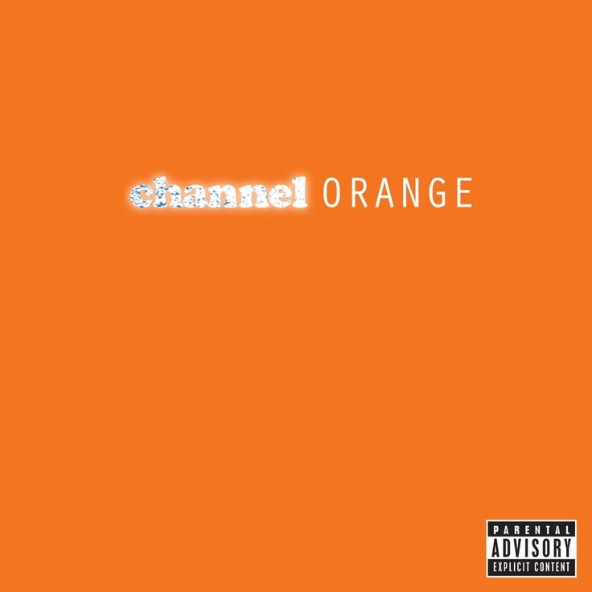
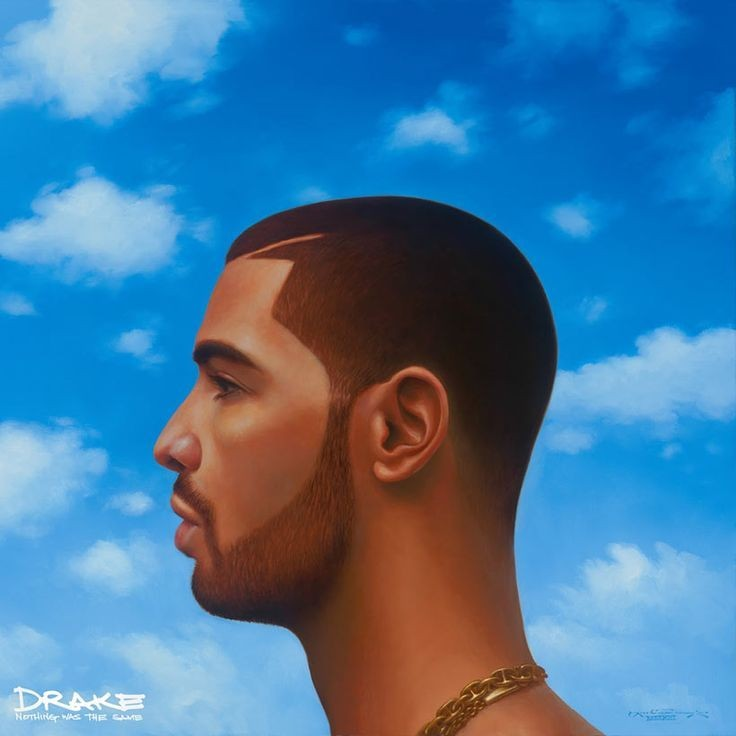
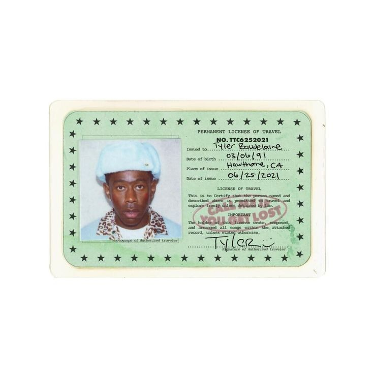
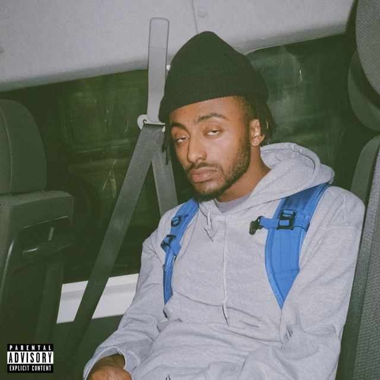
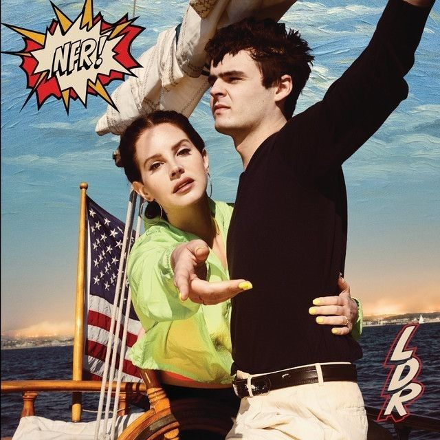
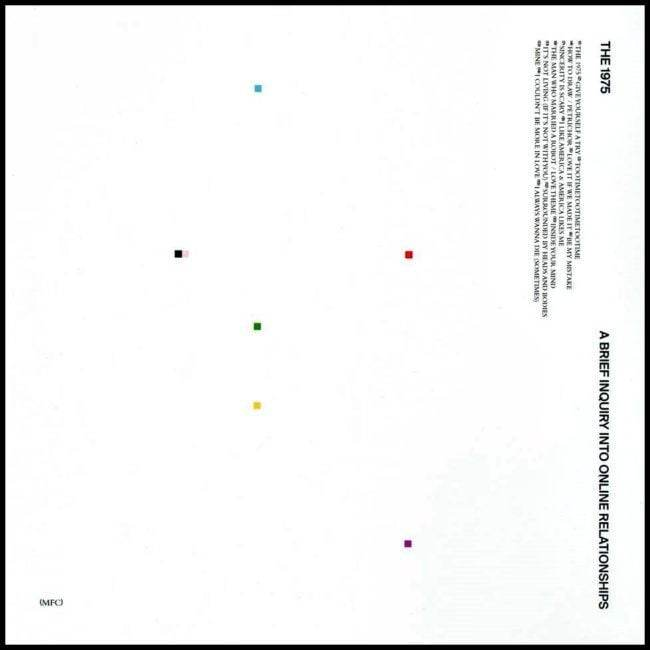

SZA is a neo soul singer, whose music has been described as alternative R&B, with elements of soul, hip hop, minimalist R&B, indie rock, cloud rap, witch house, and chillwave. SZA's lyrics are described as unravelling and her songs often revolve around themes of sexuality, nostalgia & abandonment.

Thinkin 'Bout You - Frank Ocean
Frank Ocean is a singer-songwriter and member of the hip-hop collective Odd Future. He's known for his debut mixtape, 'nostalgia, ULTRA,' and the subsequent albums 'channel ORANGE' and 'Blonde.'

Hold On, We're Going Home - Drake
Drake is a Canadian rapper, singer and songwriter, who has emerged as one of the best rappers in recent times. He is considered as the one of the Best-Selling Music Artists With the Most Top 10 Singles on the Billboard Hot 100.

Sweet - Tyler, the Creator
Tyler, The Creator is an American rapper, record producer, director, fashion designer, and the head of his own independent record label, Odd Future Records.
Kendrick Lamar Duckworth is an American rapper and songwriter. Known for his progressive musical styles and socially conscious songwriting, he is often considered one of the most influential hip hop artists of his generation.

Shine - Amine
Aminé is an American rapper, singer, and songwriter. He first gained notability for his commercial debut single, "Caroline", which peaked at number 11 on the US Billboard Hot 100 chart.
The Spins - Mac Miller
Mac Miller, was an American rapper, singer, songwriter, and record producer from Pittsburgh, Pennsylvania. Miller began his career in Pittsburgh's hip hop scene in 2007, at the age of fifteen.
TV Girl, comprised of Brad Petering, Jason Wyman, and Wyatt Harmon, was formed in 2010. Featuring shimmering vocals and sampled beats, the self-titled debut EP of the same year turned heads online immediately; the group’s lush vintage rhythms and timeless pop hooks continued to release increasingly popular EPs and mixtapes between tours.

Cinnamon Girl - Lana del Rey
Lana Del Rey is an American singer, songwriter, and record producer. Her music is noted for its cinematic quality and exploration of tragic romance, glamour, and melancholia, with frequent references to contemporary pop culture and 1950s–1960s Americana.

It's Not Living If It's Not With You - The 1975
The 1975 is an English pop rock band formed in 2002 in Wilmslow, Cheshire. Now based in Manchester, the band consists of lead vocalist and rhythm guitarist Matthew "Matty" Healy, lead guitarist Adam Hann, bassist Ross MacDonald, and drummer George Daniel.

 Rhythm and Blues
Rhythm and Blues